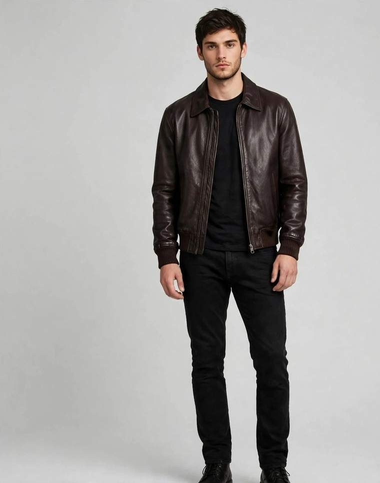

Two leather jackets, same cut, same dark brown, same photograph on a website. A leather jacket manufacturer will tell you they are not the same jacket at all, and a season of wear proves it. One keeps its shape, the creases settle where the elbows bend, and the colour deepens a little at the shoulders. The other goes shiny at the elbows, the collar starts to curl, and a pocket seam gives up in the third month. The difference was never in the photograph. It was in the hide, the grade, the lining and the zip: four decisions made before a single panel was cut, and this guide goes through them in the order they actually matter.
We make our leather jackets fully in-house in Sialkot, Pakistan, cutting, stitching, finishing and quality control under one roof. Most of this is what we explain to a buyer in the first two messages, before any price is discussed. No catalogue tells you this. A catalogue shows styles. The decisions below decide whether the style survives being worn.

A photograph shows the silhouette, the colour and where the hardware sits. It cannot show the thickness of the hide, the depth of the grain, how the leather was finished, what the lining is, or whether the zip is solid brass or plated alloy. A jacket hide usually runs about 0.9 to 1.2 millimetres thick, lambskin at the thin end, cowhide at the thick end, and that half a millimetre decides whether a jacket holds its shape or collapses at the shoulders. The finish matters just as much: aniline leaves the grain open and natural, so marks show and the jacket ages with character; semi-aniline adds a light coating; a pigmented finish covers the surface evenly and hides the grain altogether. In most cases the finish decides how the jacket ages more than the grade does. Ask for four things in writing before the quote: the hide, the grade, the thickness in millimetres, and the finish. If a factory cannot put those four in writing, that tells you something too.
Full-grain means the surface of the hide is untouched, pores and natural marks visible, and it develops character the longer it is worn. It is usually the dearest option, and it earns that where the surface is the point. Corrected grain means the surface has been sanded and embossed to a uniform pattern. It looks perfect on day one, ages flatter, and usually costs less. Neither is wrong. The mistake is paying for one and finishing it like the other. In our experience, most buyers get this wrong: they pay for full-grain and then choose a heavy pigmented black finish that covers the grain anyway. If the finish is going to hide the grain, the money is better spent on the lining or the zip. The other way round, a natural tan finish with nothing to hide behind is exactly where full-grain earns its keep. Our grades run from A, the cleanest hides, to AB, which carries small natural marks that get cut around. We explained A grade, AB grade, full-grain and lambskin in detail in our guide to leather jacket grades, and it is worth reading before you specify a grade on an order.
Lambskin is the softest and lightest of the four, and it drapes like cloth. It suits bombers, shirt-style jackets and fashion fits, where softness is the whole point. It scuffs easily, though, and a heavy belt or a load of hardware will pull it out of shape. Cowhide is the workhorse: heavier, holds a structured shape, and ages with a deep patina. It is the right hide for bikers and truckers, and it can feel stiff for the first few weeks until it breaks in. Goatskin sits in the middle. Its grain is naturally pebbled, it is strong for its weight, and it shrugs off scuffs better than lambskin. When a buyer wants toughness without the weight of cowhide, goatskin is usually the answer. Calfskin has a fine, smooth grain and the most premium feel of the four, but the hides are smaller, so large panels cost more, and it belongs on clean, minimal styles where the surface is the design. Same style, four hides, four jackets. Pick the hide for the jacket's job, not for the swatch in your hand. A swatch is the size of a hand. A jacket is the size of a person.
A style is not a look. It is a pattern: how many panels, how long the zip, how much hardware, how the lining is shaped. A biker has an asymmetric front zip, a belt, epaulettes and more stitching than any other style, and it needs a hide with structure. A bomber has ribbed cuffs and hem and a central zip, with simpler panels, and a soft hide works because the shape comes from the ribbing, not the leather. A trucker has a button front, chest pockets and a pointed collar, and the buttons and pocket flaps are the stress points, tested every time the jacket is worn. A racer is minimal, a clean front and a snap collar, and the leather surface carries the whole design, so the grade shows more than on any other style. The style also decides the hide, which is why the two decisions belong together: a structured biker in lambskin loses its shoulders, a bomber in heavy cowhide feels like armour. Fit, with leather, is unforgiving in a way fleece never is. Leather does not stretch, so the measurements have to be exact and graded properly across the sizes, chest, body length, sleeve length and shoulder, each one separately, and the sample tried on real people in the sizes your customers actually buy.
Five decisions, settled before you write, and the quote comes back exact instead of approximate:
A lining is not an afterthought. Quilted diamond lining adds warmth, satin lets the jacket slip on over a shirt, cotton drill breathes in mild weather, and the armhole seam is where a cheap lining tears first, so that is where it should be checked. The main zip is the most-used part of the whole jacket, and a weak zip ruins a good hide. Snaps should sit flat and close with one press. A snap that needs two hands is a snap that will fail.
When a sample lands on my table I do three things before I look at the outside of it. I run the main zip up and down twenty times, fast, the way a customer does when they are in a hurry. I pull the lining at the armhole, not hard, just enough to feel whether the stitching holds. And I fold the collar the way it will sit when the jacket is worn open. The outside of a leather jacket is the easy part. The inside is where a cheap jacket confesses, usually at the lining or the zip, and it is cheaper to find that out on one sample than on fifty finished jackets.
A European label came to us with a structured biker and one firm instruction: lambskin, because the swatch felt beautiful in the hand. The first sample told a different story: the shoulders sagged under the belt and the hardware, and the front pulled at the zip every time the jacket was closed. We remade the body in cowhide and kept lambskin for the inside of the collar, where the softness is actually felt. The second sample held its shape, the buyer kept the order, and the collar still feels the way they wanted. The lesson is the one from the section above: choose the hide for the structure, not for the swatch. The swatch never has to carry a belt.
The sample takes 7–10 working days from the day we have your design and the details agreed, and that is the cheapest week of the whole order. When it arrives, wear it, do not just hang it. Run the zip twenty times. Rub a white cloth on the inside of a panel and check for dye coming off. Look at the stitching where the sleeves meet the body, and at the pocket corners. Check the hardware colour matches across zips and snaps. And smell it: a strong chemical smell means the finishing was rushed. One round of changes at this stage costs a day. The same change after cutting costs the run.
A trial run can start at 15 pieces of one style, sizes mixed inside the run, and a first leather order usually runs to 50 pieces across the styles a brand wants to test. Once the sample is approved, a first leather order takes 25–35 days: cutting, stitching, finishing and a final check, all under our own roof, so nothing waits on an outside unit. Nothing in the run carries our name unless you ask for it. The labels, the size tags and the packing are yours, and the country tag reads "Made in [your country]" if you ask for it, otherwise "Made in Pakistan". Share the date the goods have to be in your customers' hands at the start, and the run can be planned backwards from it, shipping to North America or Europe included. On a large order, a third-party pre-shipment inspection puts an independent report behind the shipment.
Your first order starts with one message: your design or tech file, or a clear photo and the jacket you already own, the hide you want or the feel you want, your sizes and the date. Send it on WhatsApp at +92-339-5099397 or by email at safettech@outlook.com, and we will come back with an exact quote and a sampling plan. Our leather range covers biker, bomber, trucker and racer jackets, made fully in-house in Sialkot, Pakistan.

Leather is the one division where I still pick up every sample myself before it leaves the table. If the jacket feels right in my hands, the weight, the zip, the lining, it will feel right in your customer's. Send me the style you have in mind and I will tell you which hide it wants.
Ahmed Zahid
Founder & Director, Safe-T TECH International · Sialkot, Pakistan
Send your design today — samples in 7–10 days, first leather orders in 25–35 days, trial runs from 15 pieces per style.